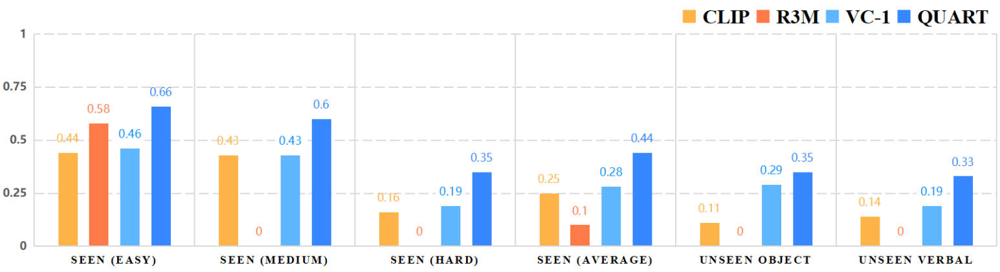

We collect a large-scale multi-task dataset QUAdruped Robot Dataset (QUARD). It includes multiple tasks such as perception, navigation, and advanced capabilities like object avoidance. To the best of our knowledge, this is the first quadruped robot dataset that incorporates a significant amount of vision, language instruction, and robot command data. As collecting data on real robots is expensive and inefficient, we primarily rely on data generated in simulation, which exhibits significant differences in visual, sensor, and system dynamics.
The architecture of QUART is designed to leverage the scene comprehension capability of a pretrained MLLM. It receives visual information as observation, and outputs an action representing the actual action taken by the robot based on text-form instructions, and de-tokenizes it into specific action values. QUART can generate a complete action sequence at a processing rate of 2Hz in actual scenarios, and hand it over to the underlying low-level strategy for execution.
We show both simulation and real scenarios of all six tasks: Go to, Distinguish, Go through, Crawl, Go avoid and Unload .
We here show results in different sim2real training paradigms and failure case analysis.
1. Simulation + Real Data
2. 10% Simulation + Real Data
3. Simulation Data
4. Real Data
We compare the results in different initial localization, it shows that our model is robust to different initial localization.
@article{tong2024quartonline,
title={QUAR-VLA: Vision-Language-Action Model for Quadruped Robots},
author={Ding, Pengxiang and Zhao, Han and Wang, Zhitao and Wei, Zhenyu and Lyu, Shangke and Wang, Donglin},
journal={ECCV},
year={2024}
}